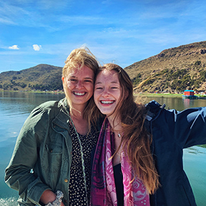

Research at South Carolina
Research is a learning tool of the highest order at the University of South Carolina. Discovery allows us to illuminate history, contextualize the present, and help plan for what’s to come.
Scientific research, scholarship and creative activity abound throughout USC. That focused presence within nearly all colleges, departments and campuses of the state’s flagship university is one reason Carnegie Foundation has designated South Carolina as an institution of very high research activity.

Research Spotlights
-

Transformative Peru winter session shapes student passions, career plans
In 2021, a group of 20 students from across majors and class standings journeyed to Peru to explore the modern day capital city of Lima as well as the ancient Incan capital in Cusco and the sacred site of Machu Picchu. This year, another cohort will return for a winter session to explore the rich history and culture of Peru.
-

ICYMI: Ten big things happening at the university
The university never sleeps, but it does slow down a bit during the summer. With the start of the fall semester, here’s a reminder of some recent happenings that you might have missed, plus a heads up about some major upcoming events.
-

Pilot project helps parents develop better sleep routines for school-age children
A sleep promotion intervention program from the Arnold School of Public Health aims to give parents much-needed tools to help their children get the sleep they need during the busy school year.
-
How a hip-hop mindset can help teachers in a time of turmoil
While hip-hop has created a lot of good memories, good music and good times, the culture has gifted society much more than just entertainment. Toby Jenkins, a higher ed professor who researches hip-hop culture, writes for The Conversation about the genre's greatest gifts — freedom of thought, flexibility and truth-telling.

Let's build a better world.
The resources of the University of South Carolina are poised to address local and global challenges. We work with public and private collaborators to provide our researchers with the resources and infrastructure they need to make a difference.
Partnership Opportunities